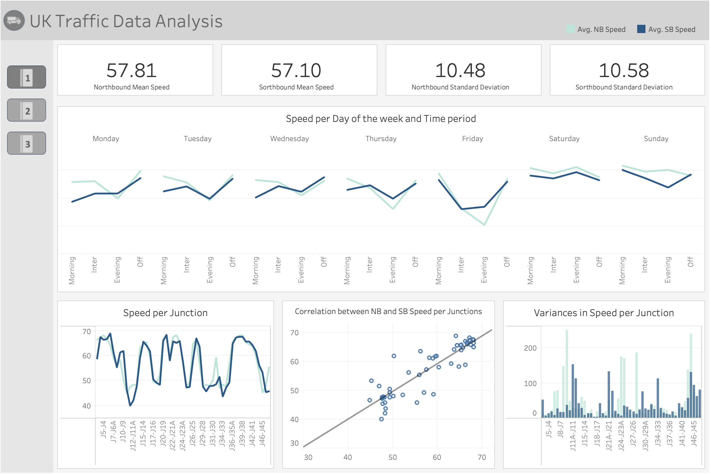

Welcome to My Portfolio
Showcasing my work and passion for data.
Projects
Python, SQL, Spark
Analysed big data using SQL, Python, Spark, Machine learning, Databricks.
View on Databricks

View on Tableau
Python, SQL, Tableau
This project involves cleaning self-collected data, storing them and analysing patterns in Tableau.
View on GitHubView on Tableau


Web scrapping with Python and Selenium
Automated a real-time data collection using Python and Selenium.
View on GitHubAbout Me
Hi! My name is Ayumi. Originally from Japan, I’m living in Valais, Switzerland,
where breathtaking nature meets delicious wines and cheeses :)
I’m a passionate data storyteller dedicated to revealing the narratives hidden within complex datasets, leveraging technologies including Python, SQL, Spark, Power BI, Tableau, R, and Selenium. Explore my work and see how I bring data to life!